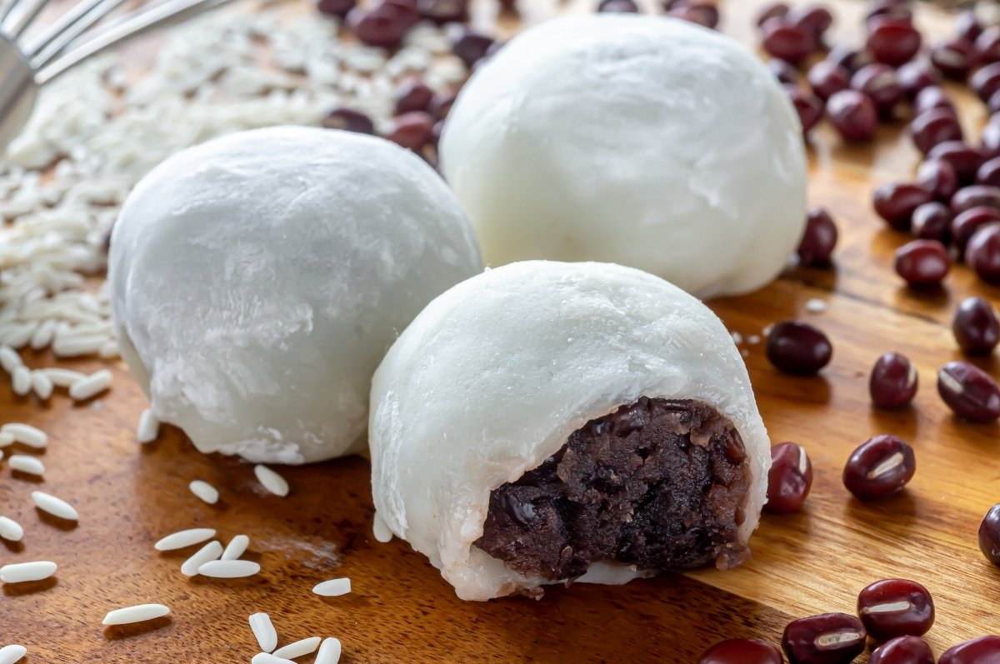

Easy Mochi

Description
Mochi is a bun-shaped Japanese dessert made from sweet glutinous rice flour,
or mochigome. It has a soft, chewy texture that is somewhat elastic. Mochi is
often flavored with matcha (or green tea powder), which gives it a light green hue.
Ingredients
- Red Bean Paste
- Glutinous Rice Flour
- Green Tea Powder
- Water
- Sugar
- Cornstarch
How to Make Mochi
- Wrap red bean paste in foil and freeze until solid. Once the paste is frozen,
divide and roll into eight equal balls. Set aside or return to the freezer.
- Mix sweet rice flour and green tea powder in a microwave-safe bowl.
Stir in water, then stir in the sugar. Mix until smooth.
Cover bowl with plastic wrap and cook in the microwave for about 3 minutes and 30 seconds.
Stir the mixture, then heat in the microwave for an additional 15-30 seconds.
- Fresh mochi should be stored in the freezer. Avoid storing it in the fridge,
as it will quickly dry out and harden. Store mochi in an airtight container
in the freezer for up to two weeks. To prevent sticking, either flash freeze the mochi before transferring it
to the storage container or individually wrap each mochi ball.